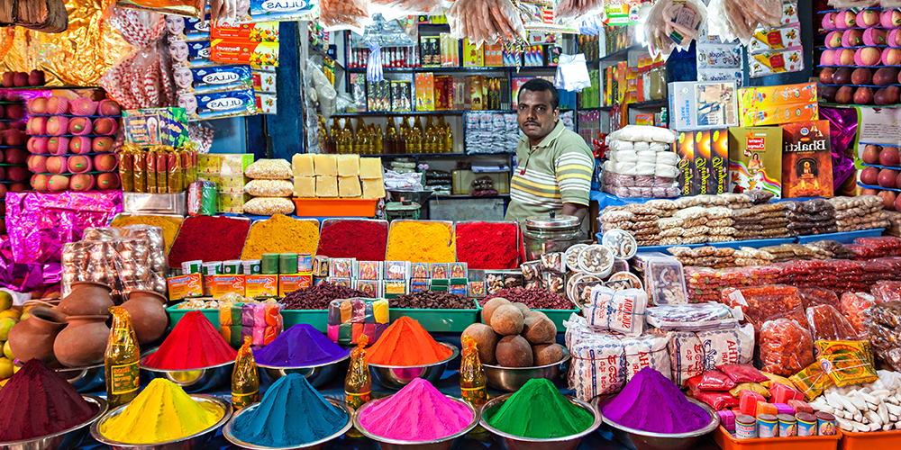
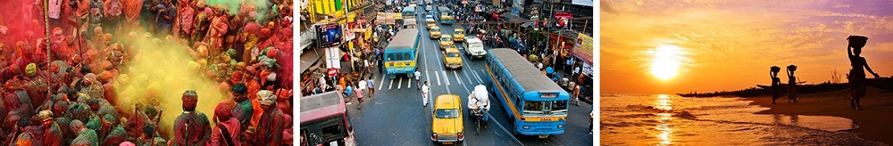
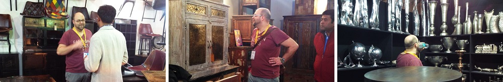
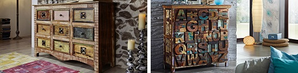
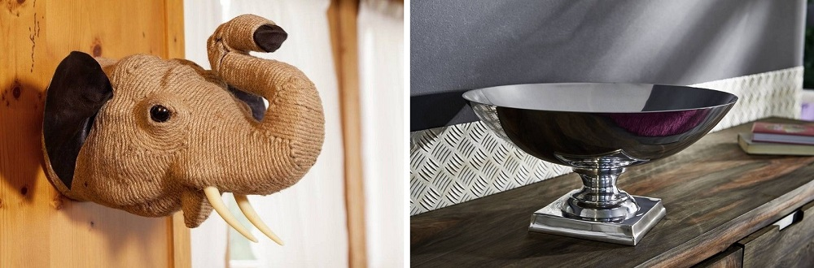

On trips to India
The IHGF in New Delhi is considered to be the largest trade fair for arts, crafts and gifts in Asia and is always worth a visit.

Indian spice market
The IHGF celebrated its 30th anniversary in 2010. Over 2500 exhibitors from all over India can now be found on an area of 97,000 m². More than 6,000 buyers and 350 company agents from over 30 different countries use this platform, and the trend is growing rapidly.
India attaches great importance to the development of internationally sought-after products. The state relies on natural processing of the raw materials with its own signature. Environmental awareness is playing an increasingly important role in India. Manufacturers are increasingly using vegetable dyes for dyeing and, if possible, avoid using chemicals. The organizers of the fair attach great importance to real craftsmanship. Machine mass production is not allowed.

The range of products on offer ranges from gift items, jewelry, watches, fashion accessories and bags to household goods, crockery and cutlery, lighting, lamps, candles, incense sticks, decorations, furniture, floor coverings, paints and fabrics. The exhibitors mainly use wood, metal, gold, silver, crystals and precious stones, reeds and bamboo, cotton, coconut and linen (flax), wool, silk, jute, stones and terracotta as raw materials.
The IHGF Delhi Fair takes place three times a year, in February, April and October. Each time with different manufacturers and new items. It is a real melting pot of innovations in the fields of handicraft, fashion and design. The Indians are extremely creative and innovative. You see an incredible number of new products and creations.

Our friend Patrick while visiting India is interested in what's on the rise and what trends are emerging. It was during just such a tour of the fair that the idea for the SPIRIT series came up, which is one of our most popular series today.

On the exhibition you can find such unique items like a decoration made from colored pencils or impressive huge wooden figures that are completely carved.

Examples of our unique handmade Indian decorations.